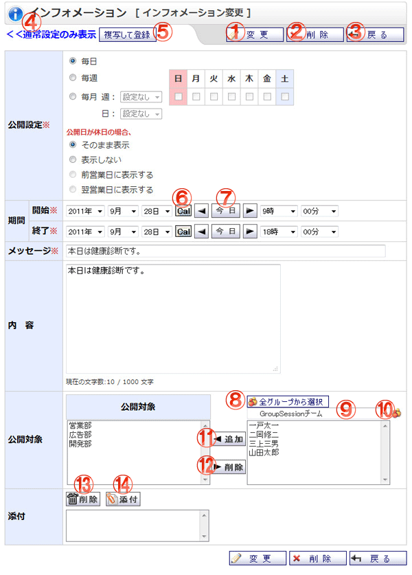

インフォメーションを変更する画面です。

機能説明
変更ボタンインフォメーション変更確認画面へ遷移します。 |
削除ボタンインフォメーションデータ削除確認画面へ遷移します。 |
|---|---|
戻るボタンインフォメーション一覧画面へ遷移します。 |
詳細設定表示切り替えクリックすると詳細設定入力項目が表示されます。 |
複写して登録ボタンインフォメーション登録画面へ遷移します。その際、現在入力している内容が各入力項目に設定されます。 |
カレンダーボタンポップアップでカレンダー画面が開きます。カレンダー画面で日付をクリックすると、クリックした日付がセットされます。 |
前日・今日・翌日ボタン年・月・日コンボを切り替えます。 |
全グループから選択ボタンポップアップで全グループから選択画面が開きます。 |
グループ･ユーザコンボ選択したグループに所属するユーザがユーザリストに表示されます（既に宛先に追加されているユーザは表示されません）。 |
グループボタンポップアップでグループ選択画面が開きます。 |
グループ･ユーザ追加ボタン登録されているグループ又は、ユーザリストで選択されているユーザを、宛先リストに追加します。 |
グループ･ユーザ削除ボタン宛先リストで選択されているグループ又はユーザを、宛先リストから除外します。 |
削除ボタン添付のリストで選択中の添付ファイルを削除します。 |
添付ボタン添付ファイル選択画面をポップアップで表示します。ファイルを選択し、確定すると添付のリストに選択したファイル名が追加されます。 |
表示・入力項目説明
公開設定
インフォメーションの公開日時を設定します。
期間
インフォメーション変更を適用する期間を指定します。
メッセージ
トップﾟ画面に表示される当インフォメーションのメッセージを入力します。
内容
当インフォメーションの内容を入力します。
公開対象
当インフォメーションを公開するグループを選択します。
添付
添付するファイルを選択します。